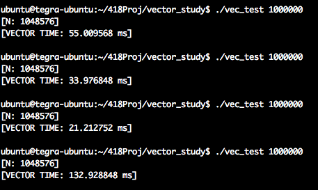

Final Report: Conclusions and Data
Final Report: Conclusions and Data
Overview
**Note that all the code used for the project from the test framework to the studies presented can be found in my github account for which there is a link in the homepage. The final report is organized as follows. First I present the testing harness and discuss what the benefits and failures of my setup were. Then I move on to present the power characteristics of the Tegra K1 in its idle state and the system in the typical state in which I did my studies. The report then goes on to discuss the power characteristics of stressing the cpu and gpu. The sections start with a simple study of what it looks like if the system is using 1 core, 2 cores up until 4 cores. Then I move on to present more specific results based on specific tests that I ran in hopes to discover some anomilies in the power consumption. Finally the last few sections discusses what I have learned, suggestions that I have for those wanting to continue researching power, and my overall take on the project.Test Framework
The first step towards implementing the test harness was putting some sort of current measuring device in
between the Jetson Tegra K1 power plug. In order to go about this I used the INA219 current sensor which I then plugged into and Arduino and I was able to poll the INA219 chip and use a serial cable connected to my computer to then feed in the current measurements to a QT/C++ GUI that then read and plotted the values. The INA219 sensor measured current to about a 1% percision, that is it was off by (+-) 10mA. It could also measure up to 3.2A but as expected it never had to measure such high currents. In addition I mainly did my measurements in current I just found that easier to think in terms of, but any conversions done below from current to power are done by multiplying the current by 12.27V output of the Power brick as measured by a multimeter. Also if it concerns anyone the board is not actually on the table there are screws on all four sides holding the board in the air.
Although I would have preferred not to have had to splice the power brick cord I went over other options
and this seemed like the best option at the time, I also contacted another person Michael Larabel who is also doing power measurements on the Tegra K1 to verify the accuracy of my meausurements but he has not gotten back to me yet. I'm interested in comparing results because he is using a WattsUp USB power meter to do the measurements hence it would be interesting to see if there is a difference in accuracy in either of our approaches.
CUDA Sample SDK smokeParticles(Live Plot) Example of using Data Comparison Option
The Live plot samples at about 30 Samples per Second. The Tegra K1 has a keyboard and Ethernet connected. In order to do the development I connected to the board via SSH and I also used a keyboard and mouse at times. The live plot also supports saving, you can also change the mode of the plot so that it stores data for the time you run it as opposed to showing you a live view of the power being consumed. Examples of what I have discussed are shown above.
Basic Measurements


One Core CPU Peak: 350mA Two Core CPU Peak: 485mA

Three Core CPU Peak: 570mA Four Core CPU Peak: 640mA
**Note that the axis here are ms vs Current, there may be plots which show seconds vs power. Here are a set of plots each one targeting a certain number of cpus stressing and measure the peak current consumed by stressing the system. The tests simply launch threads and constinuously do a set of math operations. I verified that the tests consrespondingly stressed the correct number of CPUs using the gnome-system-monitor.
CPU/GPU Saxpy Study

Green: Cuda vs Blue:Serial Green: Cuda vs Blue:Neon
Cuda, Serial, Neon: the graph matches the ordered mentioned
**Note the first two plots here were generated using the Non-Live part of my plot its able to take in data into multiple streams and allow the user to move the graphs to better compare algorithms. This study here was done by implementing Saxpy using arm_neon vector instructions 32bit float 4 wide SIMD, GPU Saxpy using 128 Threads per block number of blocks depended on the array size, and finally a simple serial version
From the graph above we can see the that GPU version actually consumes the most power, followed by
the neon version and the serial version consumes the least power. The tests have three parts first we generate the X and Y array, for the GPU and vector program we need to load the data onto the corresponding data structures inorder for the system to operate on the them. For the Neon instructions that was the vector units and for the GPU code that was the device memory. After the computation the results are copied back to system memory. The only difference in the code is target execution environment.
The kernel execution time of the GPU is much faster than both the serial and vectored version however due to having to copy data to and from the device we see a higher power draw. Although we see that the serial version consumes a bit less power than the vectored version I not able to make a definite conclusion on what is happening because the timing sometimes indicates that the vectored version is faster and other times it indicates the serial version is faster. Throughout my entire study I have not been able to get reliable CPU timing, I'm using the trusty CycleTimer that we used all throughout class. I don't know if has to do with the fact that I sometimes receive warnings of clock skew but measuring CPU time accurately has definitely been a deterent to drawing accurate conclusions. There is an example of what I'm referring to below.
